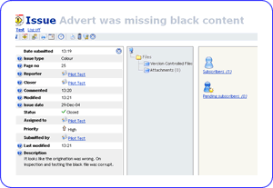

|  |
|||
| Layout | Every item in every class in semory will have the same layout. Items show there key description at the top of the screen and in the browser title. | ||
| Properties | On the left panel all current properties are shown for the item. If a property has been shortened to keep the view tidy it will displayy >> at the end of the text. Click on the chevrons and the complete text will be shown. Some properties have links to there type of item for example a contact. | ||
| Attachments | Links to any attachments are shown in the middle. You can also make your own attachments here by browsing and uploading your files. You can attach any file. Note that attachments containing text (ie documents, pdfs & spreadsheets) will all be indexed for searching | ||
| Links | Other related links are shown on the right, such as subscriptions, comments and invites. | ||
| Comments | Below the current properties you'll see any comments added to this item. This is just like a mini user forum for this item enabling all relevant dialogue to be recorded and made available to everyone involved. You can add a new comment via the button at the bottom or add comments to a thread already started by some by clicking on the plus icon. | ||
| Change History | At the bottom is the change history. This is like an audit trail of everything that has changed in this item. It shows in the list who changed what, when and if they care to mention, why. You can see what it was changed from by drilling into the change made via the left icon link. | ||
| Meet Now | This is an icon in the menu for items allowing you to chat on-line with any user about this particular item and record the conversation history, just like IM. You do not need an IM application to use this feature. | ||